О кафедре
На кафедре ультразвуковой диагностики проводятся лекции, практические занятия и семинары, нацеленные на развитие понимания принципов работы ультразвуковых приборов, интерпретации результатов исследований и применения ультразвука в клинической практике.
Миссия
Была основана 14 августа 2023 года с целью эффективной подготовке квалифицированных специалистов в области ультразвуковой диагностики
Ценности
- Практические занятия с постановкой руки
- Живые встречи
- Обучающая платформа
- Выездные курсы в города России
Планы
- Набрать группу на Ординатуру УЗД
- Открыть новые направления обучения
История кафедры
Фотогалерея кафедры


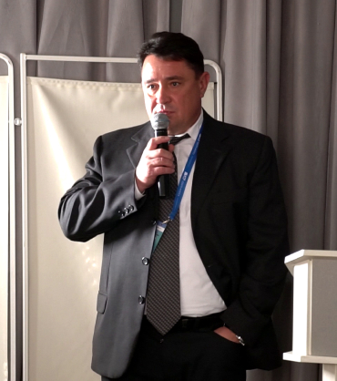
Заведующий кафедры
Болоцков Александр Сергеевич
- Стаж 28 лет
- Кандидат медицинских наук,
- Врач ультразвуковой диагностики высшей квалификационной категории,
- Заведующий отделением УЗД “ЧУЗ Клиническая больница “РЖД-Медицина”,
- Главный внештатный специалист по УЗД Северокавказской Дирекции здравоохранения “РЖД-Медицина”,
- Заведующий кафедрой ультразвуковой диагностики АПКиПП (г. Ростов-на-Дону)
-
6 патентов
- Белоусов И.И., Коган М.И., Болоцков А.С., Паленый А.И. Патент на изобретение № 2428932 от 20.09.2011 - «Способ дифференциальной диагностики воспалительной и невоспалительной форм хронического абактериального простатита».
- Сидоренко Ю.С., Шевченко А.Н.,Медведев В.Л., Болоцков А.С., Максимова Н.А. Патент на изобретение №2488352 от 27.07.2013 «Способ дифференциальной диагностики патологии предстательной железы»
- Волков А.А., Петричко М.И., Духин А.Р., Болоцков А.С., Будник Н.В. Патент на изобретение №2489093 «Способ лечения доброкачественной гиперплазии предстательной железы»
- Хитарьян А.Г., Дульеров К.А., Болоцков А.С., Ковалев С.А. Патент на изобретение № 2559148 «Способ прогнозирования эффективности лечения при тазовом пролапсе»
- Хитарьян А.Г., Алибеков А.З., Сайдуллаев Х.М., Болоцков А.С., Глумов Е.Э. Патент на изобретение №2634298 от 24.10.2017 «Способ интраоперационного определения границ резекции кишечника при его перфорации»
- Болоцков А.С., Гурцкой Р.А., Гурцкая М.Н., Курасанов Е.В., Маева Е.Г., Жилина И.В., Маджугина Л.В. Патент на изобретение №264647 от 13.02.2018 «Способ дифференциальной диагностики кистозных образований почек»
-
24 научных публикаций
- Болоцков А.С., Ильясов Б.Б. «Комплексная ультразвуковая диагностика при локальных формах рака предстательной железы»,-- «Променева дiагностика, променева терапiя». г.Киев.,2\2001г.
- Болоцков А.С., Ильясов Б.Б., Жилина И.В., с соавт. «Эхография с ЦДК и пункционная биопсия в диагностике узловых образований щитовидной железы»,-- «Променева дiаностика, променева терапiя». г.Киев.,2\2001г.
- Ильясов Б.Б., Болоцков А.С., Каймакчи М.Ю., с соавт. «Возможности ультразвука в диагностике ретроперитониального фиброза (б-нь Ормонда)»,-- «Визуализация в клинике»,г.Москва, №6, 2002 г.
- Ильясов Б.Б., Медведев В.Л., Болоцков А.С. ТРУЗИ с УЗА в диагностике рака предстательной железы // 4-й Съезд Российской Ассоциации специалистов ультразвуковой диагностики в медицине: тез. докл., 27-30 октября 2003г. – Москва, 2003. – С. – 176.
- Ильясов Б.Б., Медведев В.Л., Болоцков А.С. ТРУЗИ с УЗА в диагностике рака предстательной железы // Актуальные проблемы деятельности диагностических центров в современных условиях: материалы ежегодной конференции ДиаМА 29 сентября - 3 октября 2003г. – Санкт-Петербург, 2003. – С. 66-67.
- Болоцков А.С., Ильясов Б.Б., Никитин С.В. Комплексное ультразвуковое исследование в диагностике заболеваний семенных пузырьков. //Научные достижения – практике: сборник научных работ, посвященных 15-летию кафедры функциональной диагностики и интраскопии Ставропольской государственной медицинской академии. – Ставрополь, 2005. – С.136 - 143.
- Болоцков А.С., Ильясов Б.Б., Никитин С.В. Комплексное ультразвуковое исследование в диагностике заболеваний семенных пузырьков. //Современные диагностические и лечебные технологии. Сборник статей к 10-летию областного консультативно-диагностического центра. – Ростов-на-Дону, 2005г. – С. 265-269.
- Ильясов Б.Б., Болоцков А.С., Никитин С.В. Эхосемиотика очаговых и диффузных поражений семенных пузырьков при комплексном трансректальном исследовании //Актуальные проблемы деятельности диагностических центров в современных условиях: материалы ежегодной конференции ДиаМА, 27-30 сентября 2005г. – Тула, 2005. – С. 101-103.
- Болоцков А.С., Медведев В.Л., Ильясов Б.Б. Прогностическая ценность комплексного ТРУЗИ в оценке степени инвазии рака простаты в капсулу железы// Ультразвуковая и функциональная диагностика. Сборник тезисов III Съезда врачей ультразвуковой диагностики ЮФО.– 2006. – №6. – С. 99.
- Болоцков А.С., Никитин С.В. Ультразвуковая эхосемиотика очаговых и диффузных заболеваний семенных пузырьков // Ультразвуковая и функциональная диагностика. Сборник тезисов III Съезда врачей ультразвуковой диагностики ЮФО. – 2006. – №6. – С. 99-100
- Болоцков А.С., Ильясов Б.Б.. Никитин С.В., Рыжик Р.В. Прогностическая ценность комплексного трансректального ультразвукового исследования в стадировании локальных форм рака предстательной железы. //Актуальные проблемы деятельности консультативно-диагностических центров: материалы ежегодной конференции ДиаМА, 25-28 сентября 2007г. – Москва, 2007. – С. 143 - 144.
- Болоцков А.С., Ильясов Б.Б.. Никитин С.В., Рыжик Р.В. Прогностическая ценность комплексного трансректального ультразвукового исследования в стадировании локальных форм рака предстательной железы. //Ультразвуковая и функциональная диагностика. Сборник тезисов V Съезда Российской ассоциации специалистов ультразвуковой диагностики в медицине. – 2007. – №4. – С.169.
- Болоцков А.С., Ильясов Б.Б., Рыжик Р.В. Прогностическая ценность комплексного трансректального ультразвукового исследования в стадировании локальных форм рака предстательной железы: материалы 19 международного конгресса «Евросон 2007» – Лейпциг, 2007. – С.100-101.
- Болоцков А.С., Ильясов Б.Б., Рыжик Р.В. Трансректальный ультразвук: проблемы «невизуализируемого» рака предстательной железы. //Актуальные проблемы деятельности консультативно-диагностических центров: материалы ежегодной конференции ДиаМА, 22-26 сентября 2009г. – Минск, 2009. – № XI. – С.102-103.
- Болоцков А.С., Ильясов Б.Б. ТРУЗИ: проблемные аспекты диагностики локальных форм рака простаты //Медицинская визуализация. – 2009. – С.20 – 22.
- Коган М.И., Белоусов И.И., Болоцков А.С. Артериальный кровоток в простате при синдроме хронической тазовой боли / хроническом простатите //Урология «Медицина» – 2011г. – № 3. – С. 22 – 28.
- Кит О.И., Шевченко А.Н., Болоцков А.С. Трансректальный ультразвук: актуальные вопросы диагностики локальных форм рака предстательной железы // Вестник медицинского стоматологического института . – 2011. – № 4. – С. 40-43.
- Болоцков А.С., Будник Н.В., Тетерникова Е.Н., Волков А.А. Прогностическая ценность ТРУЗИ в оценке инвазии опухоли в капсулу предстательной железы // Ультразвуковая и функциональная диагностика. Тезисы VI съезда РАСУДМ. – 2011. – №5. – С. 55
- Болоцков А.С., Будник Н.В., Маджугина Л.В., Волков А.А. ТРУЗИ: актуальные вопросы диагностики локальных форм рака предстательной железы // Ультразвуковая и функциональная диагностика. Тезисы VI съезда РАСУДМ. – 2011. – №5. – С. 56
- Кит О.И., Шевченко А.Н., Болоцков А.С., Максимова Н.А. Возможности трансректального ультразвука в ранней диагностике локальных форм рака предстательной железы // Современные проблемы науки и образования. – 2012. – № 2; URL: http://www.science-education.ru/102-5948 (дата обращения: 10.04.2012).
- Гурцкой Р.А, Болоцков А.С., Маджугин М.Л. Применение контрастного препарата «Соновью» при резекции малых опухолей почек. Сборник тезисов Междисциплинарной научно-практической конференции с международным участием «Новые технологии в диагностике и лечении урологических заболеваний» .Москва. 2016.
- Болоцков А.С., Курасанов Е.В., Жилина И.В., Арабаджан М.С. Возможности эластографии сдвиговой волной в диагностике рецидивного рака молочных желез. /Ультразвуковая и функциональная диагностика. Москва. - 4.2016.- с.87.
- Маджугин М.Л., Болоцков А.С., Гурцкой Р.А. Применение контрастно-усиленного ультразвука при резекции почек./ Ультразвуковая и функциональная диагностика. Москва. 4.2016. стр. 104-105.
- Болоцков А.С., Маджугин М.Л. Возможности прогноза выраженного интраоперационного кровотечения при проведении ТУР-простаты с помощью предоперационного ТРУЗИ./ Медицинская визуализация. Москва. Том 21, №5 12.2017. с.108-112.
-
30 апробаций результатов научных исследований
- Болоцков А.С., Ильясов Б.Б. «Комплексная ультразвуковая диагностика при локальных формах рака предстательной железы»,-- «Променева дiагностика, променева терапiя». г.Киев.,2\2001г.
- Болоцков А.С., Ильясов Б.Б., Жилина И.В., с соавт. «Эхография с ЦДК и пункционная биопсия в диагностике узловых образований щитовидной железы»,-- «Променева дiаностика, променева терапiя». г.Киев.,2\2001г.
- Ильясов Б.Б., Болоцков А.С., Каймакчи М.Ю., с соавт. «Возможности ультразвука в диагностике ретроперитониального фиброза (б-нь Ормонда)»,-- «Визуализация в клинике»,г.Москва, №6, 2002 г.
- Ильясов Б.Б., Медведев В.Л., Болоцков А.С. ТРУЗИ с УЗА в диагностике рака предстательной железы // 4-й Съезд Российской Ассоциации специалистов ультразвуковой диагностики в медицине: тез. докл., 27-30 октября 2003г. – Москва, 2003. – С. – 176.
- Ильясов Б.Б., Медведев В.Л., Болоцков А.С. ТРУЗИ с УЗА в диагностике рака предстательной железы // Актуальные проблемы деятельности диагностических центров в современных условиях: материалы ежегодной конференции ДиаМА 29 сентября - 3 октября 2003г. – Санкт-Петербург, 2003. – С. 66-67.
- Болоцков А.С., Ильясов Б.Б., Никитин С.В. Комплексное ультразвуковое исследование в диагностике заболеваний семенных пузырьков. //Научные достижения – практике: сборник научных работ, посвященных 15-летию кафедры функциональной диагностики и интраскопии Ставропольской государственной медицинской академии. – Ставрополь, 2005. – С.136 - 143.
- Болоцков А.С., Ильясов Б.Б., Никитин С.В. Комплексное ультразвуковое исследование в диагностике заболеваний семенных пузырьков. //Современные диагностические и лечебные технологии. Сборник статей к 10-летию областного консультативно-диагностического центра. – Ростов-на-Дону, 2005г. – С. 265-269.
- Ильясов Б.Б., Болоцков А.С., Никитин С.В. Эхосемиотика очаговых и диффузных поражений семенных пузырьков при комплексном трансректальном исследовании //Актуальные проблемы деятельности диагностических центров в современных условиях: материалы ежегодной конференции ДиаМА, 27-30 сентября 2005г. – Тула, 2005. – С. 101-103.
- Болоцков А.С., Медведев В.Л., Ильясов Б.Б. Прогностическая ценность комплексного ТРУЗИ в оценке степени инвазии рака простаты в капсулу железы// Ультразвуковая и функциональная диагностика. Сборник тезисов III Съезда врачей ультразвуковой диагностики ЮФО.– 2006. – №6. – С. 99.
- Болоцков А.С., Никитин С.В. Ультразвуковая эхосемиотика очаговых и диффузных заболеваний семенных пузырьков // Ультразвуковая и функциональная диагностика. Сборник тезисов III Съезда врачей ультразвуковой диагностики ЮФО. – 2006. – №6. – С. 99-100
- Болоцков А.С., Ильясов Б.Б.. Никитин С.В., Рыжик Р.В. Прогностическая ценность комплексного трансректального ультразвукового исследования в стадировании локальных форм рака предстательной железы. //Актуальные проблемы деятельности консультативно-диагностических центров: материалы ежегодной конференции ДиаМА, 25-28 сентября 2007г. – Москва, 2007. – С. 143 - 144.
- Болоцков А.С., Ильясов Б.Б.. Никитин С.В., Рыжик Р.В. Прогностическая ценность комплексного трансректального ультразвукового исследования в стадировании локальных форм рака предстательной железы. //Ультразвуковая и функциональная диагностика. Сборник тезисов V Съезда Российской ассоциации специалистов ультразвуковой диагностики в медицине. – 2007. – №4. – С.169.
- Болоцков А.С., Ильясов Б.Б., Рыжик Р.В. Прогностическая ценность комплексного трансректального ультразвукового исследования в стадировании локальных форм рака предстательной железы: материалы 19 международного конгресса «Евросон 2007» – Лейпциг, 2007. – С.100-101.
- Болоцков А.С., Ильясов Б.Б., Рыжик Р.В. Трансректальный ультразвук: проблемы «невизуализируемого» рака предстательной железы. //Актуальные проблемы деятельности консультативно-диагностических центров: материалы ежегодной конференции ДиаМА, 22-26 сентября 2009г. – Минск, 2009. – № XI. – С.102-103.
- Болоцков А.С., Ильясов Б.Б. ТРУЗИ: проблемные аспекты диагностики локальных форм рака простаты //Медицинская визуализация. – 2009. – С.20 – 22.
- Коган М.И., Белоусов И.И., Болоцков А.С. Артериальный кровоток в простате при синдроме хронической тазовой боли / хроническом простатите //Урология «Медицина» – 2011г. – № 3. – С. 22 – 28.
- Кит О.И., Шевченко А.Н., Болоцков А.С. Трансректальный ультразвук: актуальные вопросы диагностики локальных форм рака предстательной железы // Вестник медицинского стоматологического института . – 2011. – № 4. – С. 40-43.
- Болоцков А.С., Будник Н.В., Тетерникова Е.Н., Волков А.А. Прогностическая ценность ТРУЗИ в оценке инвазии опухоли в капсулу предстательной железы // Ультразвуковая и функциональная диагностика. Тезисы VI съезда РАСУДМ. – 2011. – №5. – С. 55
- Болоцков А.С., Будник Н.В., Маджугина Л.В., Волков А.А. ТРУЗИ: актуальные вопросы диагностики локальных форм рака предстательной железы // Ультразвуковая и функциональная диагностика. Тезисы VI съезда РАСУДМ. – 2011. – №5. – С. 56
- Кит О.И., Шевченко А.Н., Болоцков А.С., Максимова Н.А. Возможности трансректального ультразвука в ранней диагностике локальных форм рака предстательной железы // Современные проблемы науки и образования. – 2012. – № 2; URL: http://www.science-education.ru/102-5948 (дата обращения: 10.04.2012).
- Гурцкой Р.А, Болоцков А.С., Маджугин М.Л. Применение контрастного препарата «Соновью» при резекции малых опухолей почек. Сборник тезисов Междисциплинарной научно-практической конференции с международным участием «Новые технологии в диагностике и лечении урологических заболеваний» .Москва. 2016.
- Болоцков А.С., Курасанов Е.В., Жилина И.В., Арабаджан М.С. Возможности эластографии сдвиговой волной в диагностике рецидивного рака молочных желез. /Ультразвуковая и функциональная диагностика. Москва. - 4.2016.- с.87.
- Маджугин М.Л., Болоцков А.С., Гурцкой Р.А. Применение контрастно-усиленного ультразвука при резекции почек./ Ультразвуковая и функциональная диагностика. Москва. 4.2016. стр. 104-105.
- Болоцков А.С., Маджугин М.Л. Возможности прогноза выраженного интраоперационного кровотечения при проведении ТУР-простаты с помощью предоперационного ТРУЗИ./ Медицинская визуализация. Москва. Том 21, №5 12.2017. с.108-112.
- Белоусов И.И., Коган М.И., Болоцков А.С., Паленый А.И. Патент на изобретение № 2428932 от 20.09.2011 - «Способ дифференциальной диагностики воспалительной и невоспалительной форм хронического абактериального простатита».
- Сидоренко Ю.С., Шевченко А.Н.,Медведев В.Л., Болоцков А.С., Максимова Н.А. Патент на изобретение №2488352 от 27.07.2013 «Способ дифференциальной диагностики патологии предстательной железы».
- Волков А.А., Петричко М.И., Духин А.Р., Болоцков А.С., Будник Н.В. Патент на изобретение №2489093 «Способ лечения доброкачественной гиперплазии предстательной железы».
- Хитарьян А.Г., Дульеров К.А., Болоцков А.С., Ковалев С.А. Патент на изобретение № 2559148 «Способ прогнозирования эффективности лечения при тазовом пролапсе».
- Хитарьян А.Г., Алибеков А.З., Сайдуллаев Х.М., Болоцков А.С., Глумов Е.Э. Патент на изобретение №2634298 от 24.10.2017 «Способ интраоперационного определения границ резекции кишечника при его перфорации».
- Болоцков А.С., Гурцкой Р.А., Гурцкая М.Н., Курасанов Е.В., Маева Е.Г., Жилина И.В., Маджугина Л.В. Патент на изобретение №264647 от 13.02.2018 «Способ дифференциальной диагностики кистозных образований почек».
Структура кафедры
Деятельность кафедры
Образование в кафедре
В рамках государственных образовательных стандартов за годы существования кафедры всего было разработано более 100 рабочих образовательных программ. В настоящее время дополнительное профессиональное образование осуществляется по 31 рабочей программаме на циклах:
— Профессиональная переподготовка лиц с высшим медицинским образованием по специальности «Ультразвуковая диагностика»
-
— Повышения квалификации в системе НМО Минздрава России для аккредитации
специалистов с
высшим медицинским образованием (в объеме 36 и 144 часов) по различным разделам
ультразвуковой диагностики как для врачей ультразвуковой диагностики, так и для
врачей-специалистов:
- терапевтов,
- эндокринологов,
- кардиологов,
- врачей функциональной диагностики,
- гастроэнтерологов,
- урологов,
- нефрологов,
- сердечно-сосудистых хирургов,
- неврологов,
- акушеров-гинекологов,
- анестезиологов-реаниматологов,
- врачей скорой медицинской помощи;
— Также на кафедре ведется подготовка специалистов по «Основной образовательной программе высшего образования подготовки кадров высшей квалификации по программе ординатуры 31.08.11 – Ультразвуковая диагностика» (квалификация «врач ультразвуковой диагностики»)
В настоящее время открыт набор на программу ординатуры «31.08.11 – Ультразвуковая диагностика»
Как проходит обучение
Этапы образоватеьного процесса
— Видео лекции
Одной из основных форм самостоятельной работы обучающихся является дистанционная форма освоения программы, главным образом теоретической ее части, которая осуществляется на платформе Академии zdrav-apkipp.ru
Практика с постановкой руки —
Практическая подготовка осуществляется. В фокусе внимания отработка мануальных навыков и клиническая практика с поставкой руки
— Учебная литература
В процессе обучения Вы получаете бесплатный доступ к новейшей закрытой электронной библиотеке, которая включает в себя учебники, пособия, научные статьи, методические издания. Учебные материалы доступны Вам круглосуточно
Тестирование —
Аттестация по предметам проходит, в том числе, в форме электронного тестирования. На первом этапе Вам дается неограниченное количество тренировочных попыток и далее, уже будучи уверенными в своих знаниях, Вы приступаете к процедуре аттестации в форме электронного тестирования
— Подготовка к аккредитации
Подготовка к аккредитации осуществляется на симуляционном оборудовании и с привлечением живых пациентов
Сотрудники кафедры
| Преподователи | Заслуги |
|---|---|
| 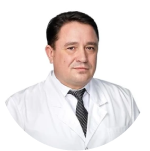 |
Болоцков Александр Сергеевич Заведующий кафедры ультразвуковой диагностики Врач ультразвуковой диагностики, кандидат медицинских наук, заведующий отделением УЗД “ЧУЗ Клиническая больница “РЖД-Медицина”, главный внештатный специалист по УЗД Северокавказской Дирекции здравоохранения “РЖД-Медицина”, заведующий кафедрой ультразвуковой диагностики АПКиПП (г. Ростов-на-Дону)
|
| 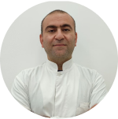 |
Дадаян Арсен рудольфович Преподователь кафедры Врач ультразвуковой диагностики, хирург высшей квалфикационной категории. Главврач клиники МедСкиллс, имеет 5 патентов. Специализируется на УЗД заболеваний органов пищеварительной системы, оперативных вмешательствах под контролем ультразвука, УЗИ в уронефрологии, УЗД мягких тканей и суставов опорно-двигательного аппарата
|
| 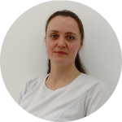 |
Зухейр Екатерина Анатольевна Преподователь кафедры Врач-акушер-гинеколог, врач УЗИ высшей категории, работает 24 года врачом акушером-гинекологом, 6 лет врачом УЗИ
|
|
Фирсов Максим Сергеевич Преподователь кафедры Врач ультразвуковой диагностики высшей, заведующий отделением УЗД ЧУЗ "КБ "РЖД-Медицина" г. Батайск", кандидат медицинских наук. Специализируется на УЗИ: сердца и сосудов,органов желудочно-кишечного тракта, печени и желчного пузыря, почек и мочевого пузыря, молочной железы, половых органов, щитовидной железы, опорно-двигательной системы
|
|
| 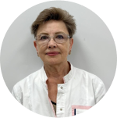 |
Зубкова Алла Александровна Преподователь кафедры Кардиолог высшей категории, пульманолог, терапевт, врач ультразвуковой диагностики. Кандидат медицинских наук. Специализируется по УЗД в акушерстве и гинекологии, УЗД заболеваний сердечно-сосудистой системы, сердца, поверхностно расположенных структур. Диагностика и лечение: пароксизмальные аритмии, лечение ишемической болезни сердца, ЧП-ЭКГ, гипертонии, эхокардиография (ЭхоКГ)
|
| 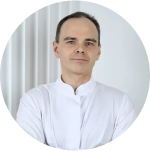 |
Маджугин Михаил Леонидович Преподователь кафедры Врач ультразвуковой диагностики, специализируется на ультразвуковой диагностике в уронефрологии, специализируется: Узи органов мошонки, эректильной дисфункции, Узи полового члена, УЗИ при гиперплазии простаты УЗИ при гиперплазии простаты, Трансабдоминальное УЗИ предстательной железы, УЗИ органом мошонки при варикоцеле.
|
Материально-техническое обеспечение
| Аппараты | Модели |
|---|---|
| 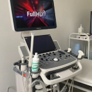 |
Mindray DC-45 Ультразвуковой диагностический аппарат Узд аппарат высокого класса, который предназначен для широкого спектра диагностических исследований, включая акушерство, гинекологию, абдоминальную медицину, урологию, ортопедию и другие. Система включает в себя ряд передовых технологий визуализации, таких как технология зондирования с подавлением шума TGC, технология обработки изображений B-Flow и технология цветного допплера Power.
|
| 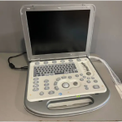 |
Mindray M5 Ультразвуковой диагностический аппарат Портативный ультразвуковой аппарат среднего класса, который можно использовать для широкого спектра диагностических процедур. Он отличается высокой производительностью и функциональностью, а также компактным размером и легким весом, что делает его идеальным для использования в амбулаторных условиях. Используется в процессе обучения в целью освоения слушателями навыков работы на аппаратах низкого и среднего класса
|
| 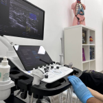 |
Samsung RS85-RUS Ультразвуковой диагностический аппарат Ультрасовременная ультразвуковая система Samsung Medison обеспечивает комплексный подход к исследованию, имеет расширенные возможности встроенного интеллекта и оптимизированный интерфейс. В совокупности с безупречным качеством визуализации и широким набором новейших экспертных программ, RS85 позволяет специалистам уверенно и быстро принимать решения. Аппарат рекомендован для медицинских исследовательских институтов и лечебных учреждений с высочайшими требованиями к ультразвуковой диагностике
|
| 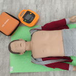 |
ВОЛОДЯ #8 Манекен-тренажер сердечно-легочной реанимации это специальное устройство, предназначенное для отработки навыков сердечно-легочной реанимации, которые слушатель должен будет продемонстрировать в первой симуляционной станции на первичной специализированной аккредитации. Тренажер полностью соответствует требованиям и нормативным документам, указанным в Паспорте станции ОСКЭ «Базовая сердечно-лёгочная реанимация»
|
| 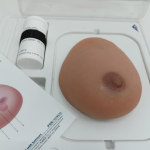 |
Тренажер ультразвукового исследования SONOtrain Трехмерная модель груди Используется для обучения и тренировки медицинских специалистов в обнаружении и диагностике опухолей молочной железы.
|
Клиническая база
Собственный диагностический центр ультразвукховых исследований находится в здании Академии на 2 этаже по адрессу Ростовская область, г. Ростов-на-Дону, ул. Пушкинская, 106
{kind=link}
{kind=link}
{kind=link}
{kind=link}
{kind=link}
{kind=link}
Расписание занятий на 2024 год
Обучение проходит в 8 городах, уточняйте у менеджеров учебного отдела
| Дата | Тема | Преподаватели |
|---|---|---|
| 05.04 — 07.04 | Эластометрия и стеатометрия, применение опций в процессе ультразвукового исследования. Интерпретация данных при различных патологиях органов и систем | А.С. Болоцков |
| 21.04 — 24.04 | Ультразвуковая диагностика заболеваний поверхностно-расположенных органов | А.С.Болоцков
А.Р.Дадаян |
| 16.05 — 19.05 | Мужское здоровье: ультразвуковая диагностика | А.С.Болоцков М.Л.Маджугин |
| 16.06 — 19.06 | Ультразвуковая эластография и эластометрия в современной клинической практике | А.С.Болоцков М.Л.Маджугин |
| 22.06 — 25.06 | Женское здоровье: ультразвуковая диагностика | А.С.Болоцков |
| 15.07 — 18.07 | Дуплексное исследование артерий и вен нижних конечностей | А.Р.Дадаян М.С. Фирсов |
| 21.07 — 24.07 | 3-D технологии в уронефрологической практике | М.Л.Маджугин |
| 19.08 — 22.08 | Курс эхокардиография | А.А.Зубкова
М.С. Фирсов |
Расписание занятий (первичная переподготовка) на 2024 год
Обучение проходит в 8 городах, уточняйте у менеджеров учебного отдела
| Дата | Тема | Преподаватели |
|---|---|---|
| 08.04 — 19.04 | Ультразвуковая диагностика с постановкой руки | А.Р. Дадаян А.С. Болоцков М.С. Фирсов М.Л. Маджугин |
| 20.05 — 31.05 | Ультразвуковая диагностика с постановкой руки | А.Р. Дадаян А.С. Болоцков М.С. Фирсов М.Л. Маджугин |
| 03.06 — 14.06 | Ультразвуковая диагностика с постановкой руки | А.Р. Дадаян А.С. Болоцков М.С. Фирсов М.Л. Маджугин |
| 24.06 — 05.07 | Ультразвуковая диагностика с постановкой руки | А.Р. Дадаян А.С. Болоцков М.С. Фирсов М.Л. Маджугин |
| 29.07 — 09.08 | Ультразвуковая диагностика с постановкой руки | А.Р. Дадаян А.С. Болоцков М.С. Фирсов М.Л. Маджугин |
| 26.08 — 06.09 | Ультразвуковая диагностика с постановкой руки | А.Р. Дадаян А.С. Болоцков М.С. Фирсов М.Л. Маджугин |
| 09.09 — 20.09 | Ультразвуковая диагностика с постановкой руки | А.Р. Дадаян А.С. Болоцков М.С. Фирсов М.Л. Маджугин |
| 25.11 — 06.12 | Ультразвуковая диагностика с постановкой руки | А.Р. Дадаян А.С. Болоцков М.С. Фирсов М.Л. Маджугин |
| 07.10 — 18.10 | Ультразвуковая диагностика с постановкой руки | А.Р. Дадаян А.С. Болоцков М.С. Фирсов М.Л. Маджугин |
| 04.11 — 15.11 | Ультразвуковая диагностика с постановкой руки | А.Р. Дадаян А.С. Болоцков М.С. Фирсов М.Л. Маджугин |
Ординаторам по специальности 31.08.11 Ультразвуковая диагностика
Открыт набор на программу ординатуры Ультразвуковая диагностика
| Сотрудники | |
|---|---|
|
Протопопова Виктория Александровна • Кандидат педагогических наук, доцент • Директор ЧОУ ДПО «АПКиПП» • Ректор АНО ВО «МедСкиллс» |
|
| 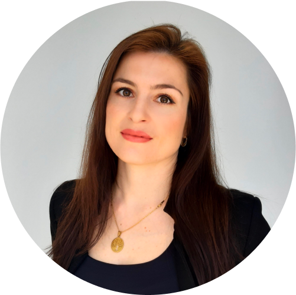 |
Денисова Оксана Викторовна Ответственный секретарь приемной комиссии по программам ординатуры Проконсультироваться по поводу поступления в ординатуру можно по телефону |
— О ординатуре
Вашими преподавателями будут сотрудники кафедры, обучение проходит на новых узи
аппаратах
— Нормативная база
Программа ординатуры по ультразвуковой диагностике Института «МедСкиллс» разработана на
основе законодательных актов Российской Федерации
-
К освоению программы ординатуры по УЗИ допускаются лица, имеющие высшее
медицинское образование – специалитет по одной из специальностей:
- «Лечебное дело»
- «Педиатрия»
- «Медицинская биофизика»
- «Медицинская кибернетика»
— С какими баллами можно поступить в ординатуру по УЗИ?
Не менее 70 баллов при прохождении вступительного испытания в форме
тестирования
— Институт присваивает дополнительные 20 баллов поступающим за успешное освоение
подготовительного курса
— Форма обучения
Очная
— Срок получения образования
2 года
— Количество мест в ординатуре по УЗИ
25 мест
— Стоимость ординатуры по УЗИ
299 тысяч за год обучения
— Зачисление в ординатуру
16 августа - 30 августа
— Подготовительный курс к поступлению в ординатуру
Для тех, кто не уверен в том, что получит необходимое для поступления в ординатуру
количества баллов, в Институте «МедСкилл» открыта программа подготовки к поступлению
«Введение в процессию. Готовимся к поступлению в ординатуру»
Выпускники кафедры
Выпускники кафедры ультразвуковой диагностики по курсам повышения квалификации и курсов первичной переподготовки
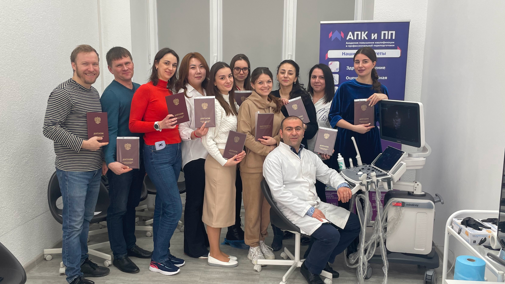
{kind=link}
04.03.2023 | Ростов-на-Дону
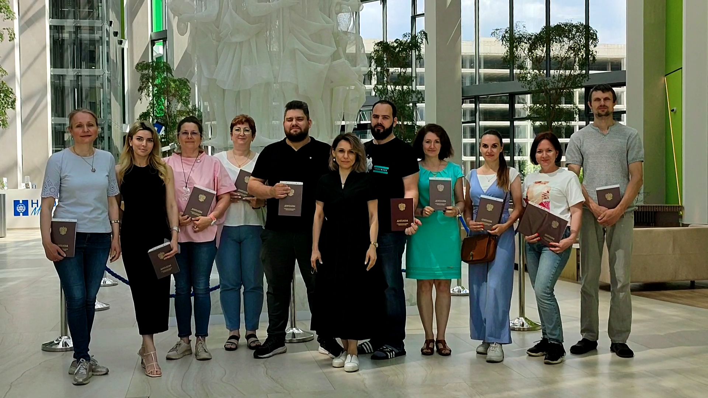
{kind=link}
02.07.2023 | Москва
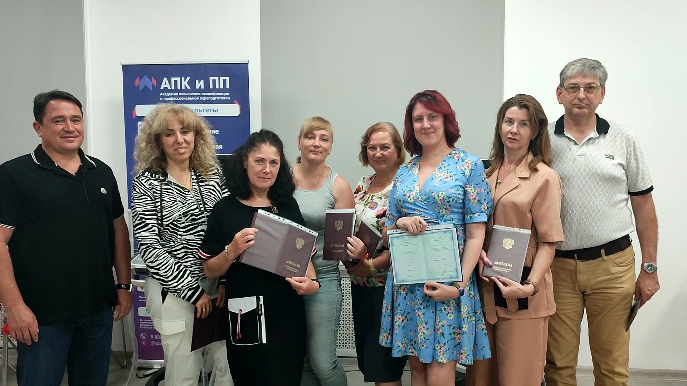
{kind=link}
29.07.2023 | Ростов-на-Дону
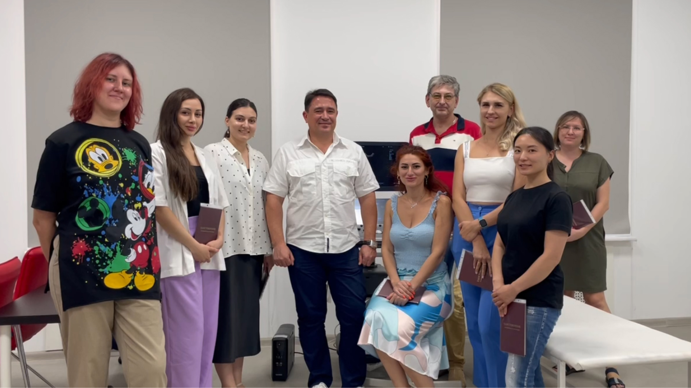
{kind=link}
13.08.2023 | Ростов-на-Дону
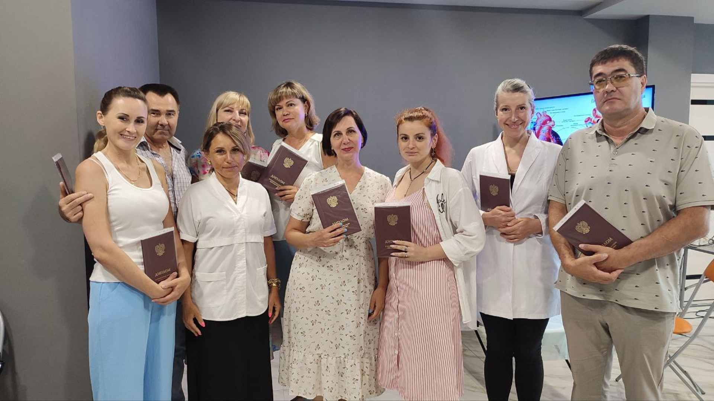
{kind=link}
25.08.2023 | Сочи
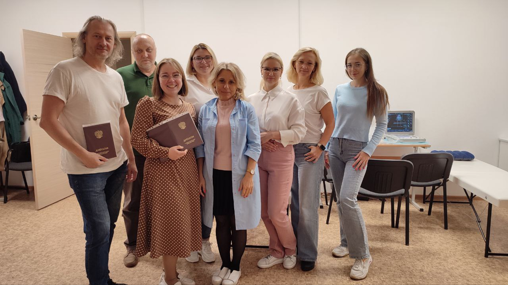
{kind=link}
29.09.2023 | Санкт-Петербург
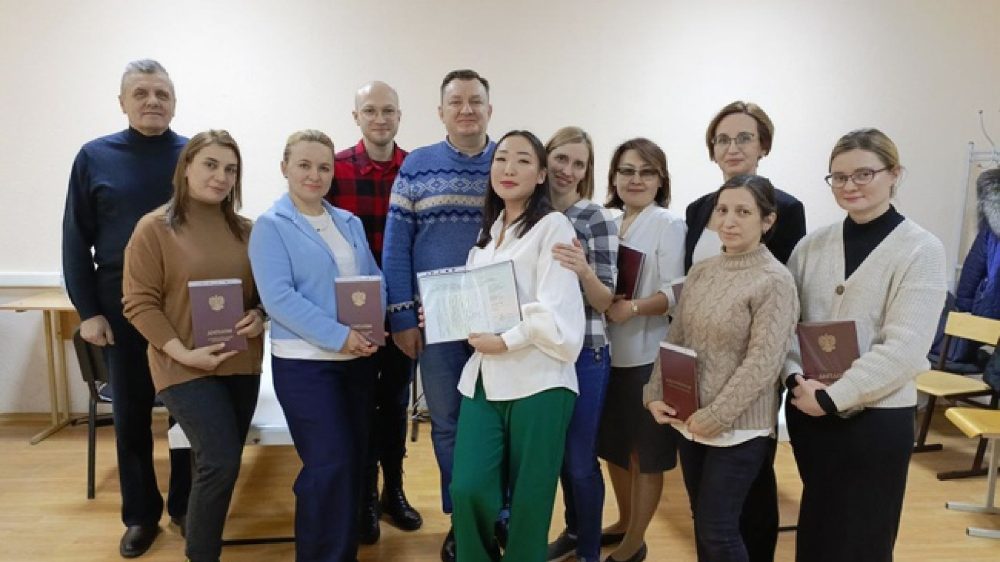
{kind=link}
08.12.2023 | Москва
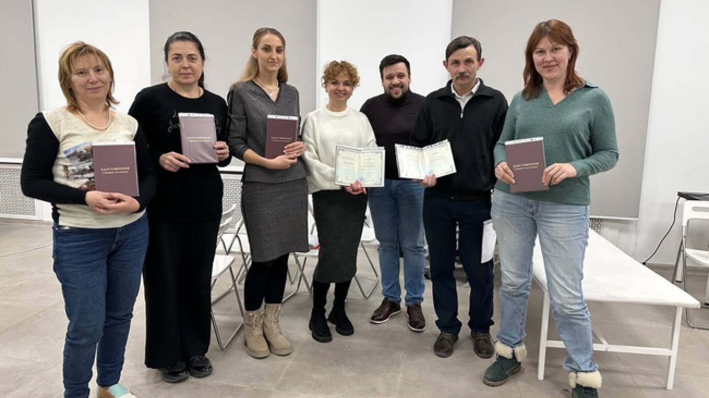
{kind=link}
14.12.2023 | Ростов-на-Дону
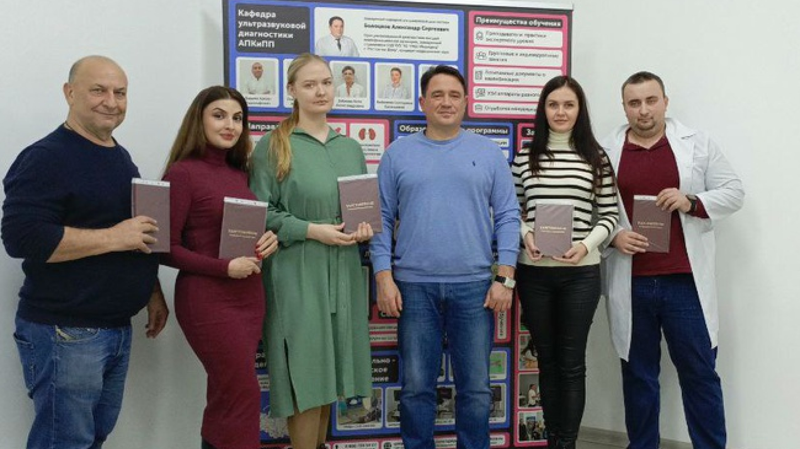
{kind=link}
22.12.2023 | Ростов-на-Дону
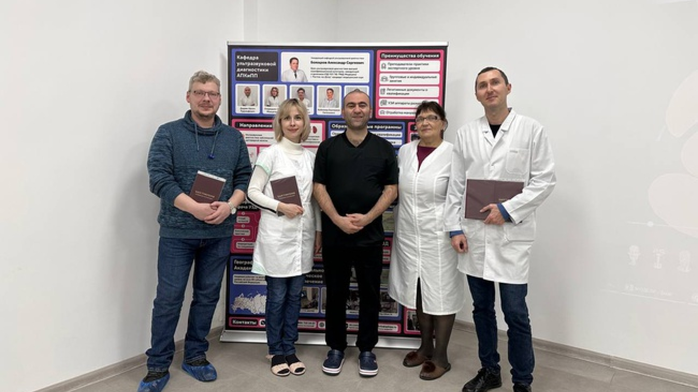
{kind=link}
18.01.2024 | Ростов-на-Дону
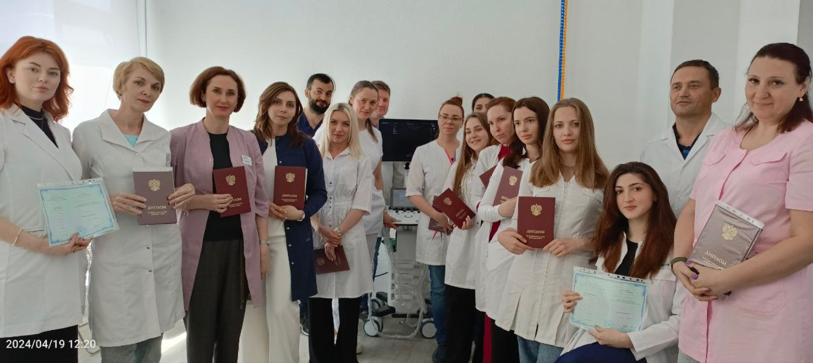
{kind=link}
19.04.2024 | Ростов-на-Дону
Отзывы выпускников
После каждого курса наши выпускники могут оставлять отзывы об обучении
Видео отзывы
После каждого курса наши выпускники могут оставлять отзывы об обучении
Часто задаваемые вопросы
Вы также можете задавать свои вопросы, методисты ответят на любые интересующие вопросы
Как поступить на обучение?
Сколько стоит обучение?
Как ознакомиться с учебным процессом, получить демо курс?
Контакты
Подробную информацию по поступлению в ординатуру или на курсы повышения квалификации и первичных переподготовках Вы можете получить, связавшись с нами любым удобным способом
Контактный телефон
Телефон ординатуры
Режим
работы
Пн-Пт с 9:00 до 19:00
Сб-Вс с 10:00 до 17:00
'%3e%3cpath fill-rule='evenodd' clip-rule='evenodd' d='M.395 19.925a.252.252 0 0 0 .243.067l4.986-1.308a9.863 9.863 0 0 0 4.616 1.15c5.423 0 9.836-4.412 9.838-9.835A9.776 9.776 0 0 0 17.2 3.042 9.778 9.778 0 0 0 10.24.157C4.817.157.404 4.57.402 9.992a9.835 9.835 0 0 0 1.261 4.825L.331 19.682a.253.253 0 0 0 .064.243zm15.48-15.562a7.913 7.913 0 0 0-5.633-2.335c-4.394 0-7.968 3.572-7.97 7.964 0 1.505.42 2.97 1.218 4.238l.19.302-.805 2.939 3.015-.79.292.172a7.952 7.952 0 0 0 4.055 1.11h.003c4.391 0 7.965-3.573 7.967-7.965 0-2.128-.827-4.13-2.332-5.635zm-8.57 1.21c.17.006.36.014.539.413.125.278.338.802.503 1.211.117.287.21.518.235.567.06.12.1.26.02.42a9.181 9.181 0 0 0-.034.068c-.06.122-.104.212-.206.331l-.125.15c-.082.1-.163.199-.234.27-.12.12-.245.25-.105.488.14.24.62 1.024 1.332 1.659.765.681 1.43.97 1.767 1.116l.16.072c.239.12.379.1.518-.06.14-.16.6-.699.759-.938.16-.24.32-.2.539-.12.22.08 1.397.659 1.637.779l.133.065c.166.08.277.134.326.214.06.1.06.58-.14 1.139-.2.56-1.178 1.098-1.617 1.138l-.127.014c-.406.048-.918.108-2.747-.613-2.25-.887-3.734-3.086-4.04-3.54a2.547 2.547 0 0 0-.051-.075l-.002-.002c-.126-.168-.976-1.302-.976-2.475 0-1.103.541-1.68.791-1.947a6.05 6.05 0 0 0 .047-.05c.22-.24.48-.3.639-.3h.034c.148 0 .295 0 .425.005z' fill='white'/%3e%3c/g%3e%3cdefs%3e%3cclipPath id='a'%3e%3cpath fill='white' d='M0 0h20v20H0z'/%3e%3c/clipPath%3e%3c/defs%3e%3c/svg%3e)